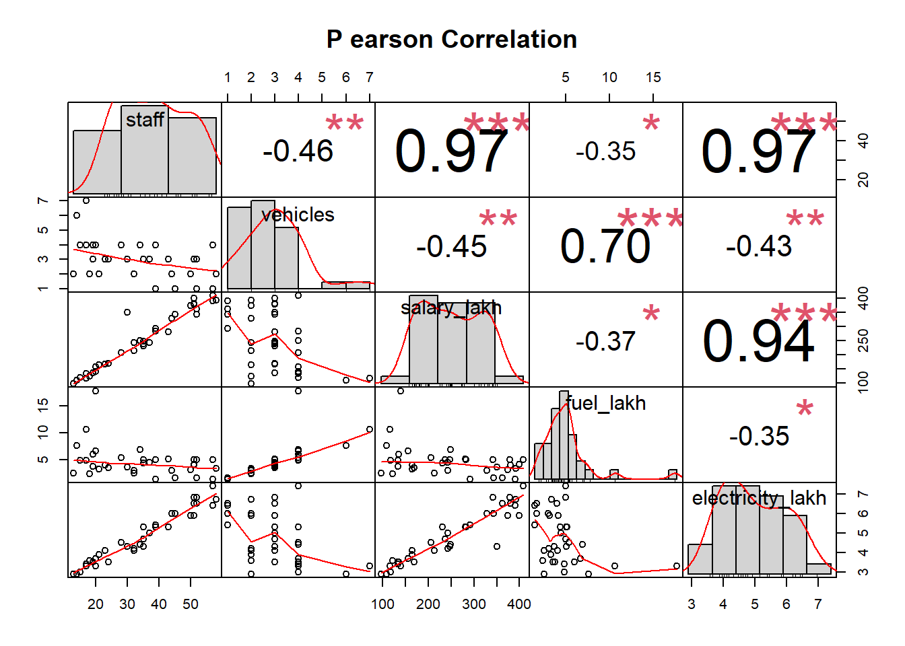
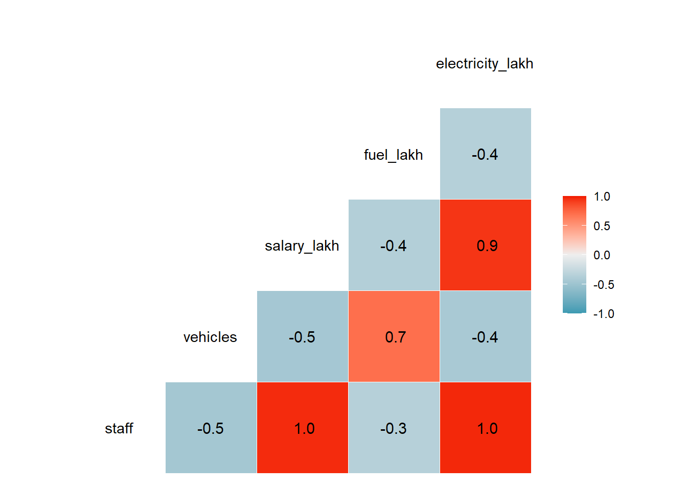
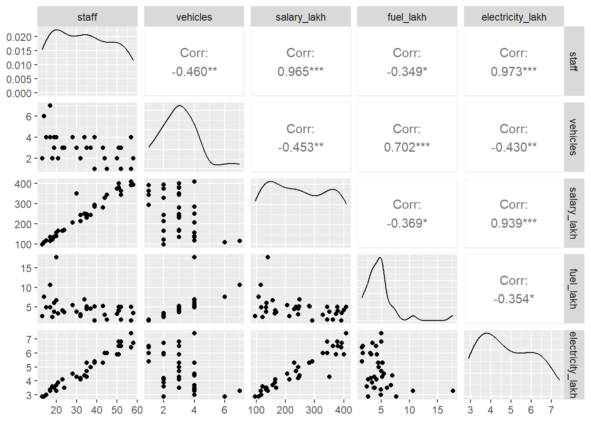

25 Descriptive Statistics
An office has given us its payment ledger for the year. Before we test a single payment, we must know what is in the file. How many records are there, and over what period? Are some amounts missing, negative or zero? Are any voucher numbers repeated? Are there dates outside the year? Does most of the money go to a few vendors? A few summary statistics answer these questions in minutes. They often produce the first audit observations too.
This first look at a dataset is called Exploratory Data Analysis, or EDA. It means examining the data to summarise its main features, often with charts. EDA shows what the data can tell us before any formal model or test. It also helps us decide whether the techniques we plan to use are suitable. EDA was developed by the American mathematician John Tukey in the 1960s and 1970s. Its methods remain in wide use today.
In this chapter we learn the tools for this first look. We start with str() and summary() of base R, and then use dplyr to compute any statistic for many columns at once. Next we meet two packages, psych and skimr, that give a full summary in one line. Then we see the relationships between numeric columns with PerformanceAnalytics and GGally. All along we use an office’s payment ledger. At the end, in Section 25.7, we put the tools together to profile the ledger as an auditor would.
Prerequisites
25.1 Our data, a payment ledger
The ledger covers the financial year 2024-25. Each row is one payment voucher. It gives the voucher number, the date, the vendor, the head of expenditure, the mode of payment, the amount, the income tax deducted at source (TDS) and the net amount paid. TDS is taken at 10% on professional fees and at 2% on other payments.
We have planted the kind of problems that real ledgers often have. Some amounts are negative or zero. Some vendors are missing. A few dates fall outside the year, and a few voucher numbers are repeated. We will find all of them in this chapter.
Code to create the payment ledger
set.seed(124)
n <- 2500
vendors <- sprintf("V%03d", 1:60)
ledger <- tibble(
voucher_no = sprintf("PV/24-25/%04d", 1:n),
date = as.Date("2024-04-01") + sample(0:364, n, TRUE),
vendor_id = sample(vendors, n, TRUE, prob = c(rep(8, 3), rep(1, 57))),
head = sample(c("Office expenses", "Repairs", "Supplies", "Professional fees"),
n, TRUE, prob = c(4, 2, 3, 1)),
amount = round(rlnorm(n, log(25000), 1.1))
)
# Planted problems, each in different rows
rows <- sample(2:n, 36)
neg <- rows[1:6]; zero <- rows[7:15]; novendor <- rows[16:27]
baddate <- rows[28:31]; dup <- rows[32:36]
ledger$amount[neg] <- -ledger$amount[neg] # negative amounts
ledger$amount[zero] <- 0 # zero amounts
ledger$vendor_id[novendor] <- NA # vendor missing
ledger$date[baddate] <- as.Date(c("2023-11-15", "2025-04-12",
"2025-05-02", "2024-03-30")) # outside the year
ledger$voucher_no[dup] <- ledger$voucher_no[dup - 1] # repeated voucher numbers
# Mode of payment, TDS and net amount
ledger <- ledger |>
mutate(head = factor(head),
mode = sample(c("e-payment", "Cheque", "Cash"), n, TRUE, prob = c(85, 12, 3)),
tds = round(amount * if_else(head == "Professional fees", 0.10, 0.02)),
net = amount - tds) |>
relocate(mode, .after = head)25.2 Using base R
Base R has two functions to see the structure and the summary of a data frame. The first is str(), short for structure (not to be confused with string). It shows the structure of the data. Its use is simple.
str(ledger)tibble [2,500 × 8] (S3: tbl_df/tbl/data.frame)
$ voucher_no: chr [1:2500] "PV/24-25/0001" "PV/24-25/0002" "PV/24-25/0003" "PV/24-25/0004" ...
$ date : Date[1:2500], format: "2025-02-15" "2024-09-14" ...
$ vendor_id : chr [1:2500] "V045" "V001" "V021" "V003" ...
$ head : Factor w/ 4 levels "Office expenses",..: 2 2 1 3 1 4 2 1 3 3 ...
$ mode : chr [1:2500] "e-payment" "e-payment" "e-payment" "e-payment" ...
$ amount : num [1:2500] 21280 8189 45192 30556 10528 ...
$ tds : num [1:2500] 2128 819 904 611 211 ...
$ net : num [1:2500] 19152 7370 44288 29945 10317 ...It gives the number of rows (observations) and columns (variables) in the data. It then lists the name of every column, with its type and its first few values. For factor columns, like head, it also shows the levels. A date stored as text, or an amount stored as text because of a stray comma, would show up here at once.
The second function of base R is summary(). It gives summary statistics for each column of a data frame.
summary(ledger) voucher_no date vendor_id
Length:2500 Min. :2023-11-15 Length:2500
Class :character 1st Qu.:2024-06-30 Class :character
Mode :character Median :2024-10-04 Mode :character
Mean :2024-10-01
3rd Qu.:2024-12-31
Max. :2025-05-02
head mode amount tds
Office expenses :986 Length:2500 Min. :-112811 Min. :-11281
Professional fees:245 Class :character 1st Qu.: 12256 1st Qu.: 264
Repairs :507 Mode :character Median : 25363 Median : 575
Supplies :762 Mean : 44848 Mean : 1272
3rd Qu.: 53862 3rd Qu.: 1268
Max. :1230520 Max. :123052
net
Min. :-101530
1st Qu.: 11944
Median : 24748
Mean : 43576
3rd Qu.: 51805
Max. :1107468 For each numeric column, it gives the five-number summary, along with the (arithmetic) mean. The five numbers are (1) the minimum, (2) the first quartile, (3) the median, (4) the third quartile and (5) the maximum. For a date column it gives the same numbers as dates. For a factor column it gives the count of each level. For a character column, like vendor_id, it only says that the column is text.
Already we see two problems. The smallest amount is negative, and the dates run from November 2023 to May 2025, beyond the financial year at both ends.
We can also recall here the function table(). It counts the values of a factor or character column in base R.
table(ledger$mode)
Cash Cheque e-payment
68 294 2138 25.3 Dplyr functions
To calculate other statistics, we can use dplyr::summarise() together with across(). For example, to calculate the mean, median and standard deviation of all numeric columns of the ledger, we can write
# A tibble: 1 × 9
amount_Mean amount_Median amount_SD tds_Mean tds_Median tds_SD net_Mean
<dbl> <dbl> <dbl> <dbl> <dbl> <dbl> <dbl>
1 44848. 25363 66197. 1272. 575 3424. 43576.
# ℹ 2 more variables: net_Median <dbl>, net_SD <dbl>Before reading the output, let us understand across(). It is used inside dplyr verbs, mostly mutate() and summarise(), to apply the same operation to many columns at once. It needs at least two arguments. The first selects the columns. We may select them by name, by type with a function like where(is.numeric), or by a pattern in the names. The second gives a function, or a list of functions, to apply. In the example above, we selected all numeric columns. Then we applied a list of three functions written in the short lambda style. With 3 numeric columns and 3 functions, we get 9 columns in the output. We learnt across() in detail in Section 13.15.
Many columns in one row are hard to read. We can reshape the result with tidyr::pivot_longer().
ledger |>
summarise(across(where(is.numeric),
.fns = list(
Mean = ~ mean(.),
Median = ~ median(.),
SD = ~ sd(.)
))) |>
pivot_longer(everything(),
names_sep = "_",
names_to = c(".value", "Function"))# A tibble: 3 × 4
Function amount tds net
<chr> <dbl> <dbl> <dbl>
1 Mean 44848. 1272. 43576.
2 Median 25363 575 24748
3 SD 66197. 3424. 63815.ledger |>
summarise(across(where(is.numeric),
.fns = list(
Mean = ~ mean(.),
Median = ~ median(.),
SD = ~ sd(.)
))) |>
pivot_longer(everything(),
names_sep = "_",
names_to = c("Variable", ".value"))# A tibble: 3 × 4
Variable Mean Median SD
<chr> <dbl> <dbl> <dbl>
1 amount 44848. 25363 66197.
2 tds 1272. 575 3424.
3 net 43576. 24748 63815.The special name .value in names_to tells pivot_longer() which part of the old column names should become new column names. In the first output it is the variable. In the second it is the statistic. The second layout, one row per column of the ledger, is usually easier to read.
names_sep = "_" splits each name at the underscore, so that amount_Mean becomes amount and Mean. This works only if the column names have no underscore of their own. A column called net_amount would be split in the wrong place. Rename such columns first, or use the argument names_pattern instead.
Let us also see one more summary function of dplyr, glimpse(). It is like str(), but fits the screen better and works well in a pipe.
ledger |>
glimpse()Rows: 2,500
Columns: 8
$ voucher_no <chr> "PV/24-25/0001", "PV/24-25/0002", "PV/24-25/0003", "PV/24-2…
$ date <date> 2025-02-15, 2024-09-14, 2024-12-17, 2024-11-02, 2024-06-13…
$ vendor_id <chr> "V045", "V001", "V021", "V003", "V025", "V014", "V010", "V0…
$ head <fct> Professional fees, Professional fees, Office expenses, Repa…
$ mode <chr> "e-payment", "e-payment", "e-payment", "e-payment", "e-paym…
$ amount <dbl> 21280, 8189, 45192, 30556, 10528, 12880, 62229, 11421, 5085…
$ tds <dbl> 2128, 819, 904, 611, 211, 258, 6223, 228, 102, 431, 1524, 6…
$ net <dbl> 19152, 7370, 44288, 29945, 10317, 12622, 56006, 11193, 4983…To count the values of a column, as table() does in base R, we can use dplyr::count(). It works well in a pipe and gives a tibble.
ledger |>
count(head)# A tibble: 4 × 2
head n
<fct> <int>
1 Office expenses 986
2 Professional fees 245
3 Repairs 507
4 Supplies 762We can also count combinations of several columns.
ledger |>
count(head, mode, name = "vouchers")# A tibble: 12 × 3
head mode vouchers
<fct> <chr> <int>
1 Office expenses Cash 29
2 Office expenses Cheque 121
3 Office expenses e-payment 836
4 Professional fees Cash 7
5 Professional fees Cheque 17
6 Professional fees e-payment 221
7 Repairs Cash 11
8 Repairs Cheque 66
9 Repairs e-payment 430
10 Supplies Cash 21
11 Supplies Cheque 90
12 Supplies e-payment 651Cash payments are a small share of the vouchers. Still, 56 of them are above ₹10,000, worth ₹33.8 lakh in all. Large payments are normally expected to be made electronically. These vouchers would be worth a look.
25.4 Using psych
Some packages produce good summaries without much effort. The package psych is one of these. Its function describe() summarises every numeric column.
vars n mean sd median trimmed mad min max
amount 1 2500 44848.16 66196.59 25363 32363.18 24265.71 -112811 1230520
tds 2 2500 1272.35 3424.39 575 773.37 569.32 -11281 123052
net 3 2500 43575.81 63814.69 24748 31437.68 23716.41 -101530 1107468
range skew kurtosis se
amount 1343331 6.25 69.88 1323.93
tds 134333 20.92 667.55 68.49
net 1208998 5.95 61.34 1276.29The output is a data frame, ready to use. Besides the mean and standard deviation, it gives the median and the trimmed mean. The trimmed mean is the mean after dropping the extreme 10% at each end. It also gives the mad (median absolute deviation, a measure of spread not affected by outliers), the skew and the kurtosis.
Skew is especially useful in audit. A skew near zero means the values are spread evenly on both sides of the middle. Here the skew of amount is 6.3. That is a strong skew to the right, with many small amounts and a few very large ones. Amounts in accounts nearly always look like this.
Another function in psych, describeBy(), gives summaries for each group. Let us describe the amounts under each head.
describeBy(ledger$amount, group = ledger$head)
Descriptive statistics by group
group: Office expenses
vars n mean sd median trimmed mad min max range skew
X1 1 986 48551.9 69763.66 26403 34744.94 25269.43 -16765 809539 826304 4.76
kurtosis se
X1 34.47 2221.73
------------------------------------------------------------
group: Professional fees
vars n mean sd median trimmed mad min max range
X1 1 245 47880.75 95955.89 27040 32777.2 26161.96 -112811 1230520 1343331
skew kurtosis se
X1 8.48 94.64 6130.4
------------------------------------------------------------
group: Repairs
vars n mean sd median trimmed mad min max range
X1 1 507 43063.34 54181.26 24863 32279.38 22726.78 -25362 595739 621101
skew kurtosis se
X1 3.75 24.52 2406.27
------------------------------------------------------------
group: Supplies
vars n mean sd median trimmed mad min max range
X1 1 762 40268.17 56055.06 24617.5 29710.56 23430.27 -42489 777701 820190
skew kurtosis se
X1 5.73 56.13 2030.66One more function, describeData(), shows the first and last four values (by default) of each column. It also counts the complete values in each column, which is a quick way to spot missing data. It reads a plain data frame better than a tibble, so we convert the ledger first with as.data.frame().
describeData(as.data.frame(ledger))n.obs = 2500 of which 2488 are complete cases. Number of variables = 8 of which all are numeric FALSE
variable # n.obs type H1 H2
voucher_no* 1 2500 3 PV/24-25/0001 PV/24-25/0002
date* 2 2500 4 2025-02-15 2024-09-14
vendor_id* 3 2488 3 V045 V001
head* 4 2500 2 Professional fees Professional fees
mode* 5 2500 3 e-payment e-payment
amount 6 2500 1 21280 8189
tds 7 2500 1 2128 819
net 8 2500 1 19152 7370
H3 H4 T1 T2
voucher_no* PV/24-25/0003 PV/24-25/0004 PV/24-25/2497 PV/24-25/2498
date* 2024-12-17 2024-11-02 2024-12-20 2024-10-04
vendor_id* V021 V003 V012 V050
head* Office expenses Repairs Office expenses Office expenses
mode* e-payment e-payment e-payment e-payment
amount 45192 30556 2097 19434
tds 904 611 42 389
net 44288 29945 2055 19045
T3 T4
voucher_no* PV/24-25/2499 PV/24-25/2500
date* 2024-08-14 2024-10-06
vendor_id* V002 V046
head* Professional fees Office expenses
mode* e-payment e-payment
amount 13958 13113
tds 1396 262
net 12562 12851The first line says how many rows are complete cases, that is, rows with no missing value at all. Here 2,488 of the 2,500 rows are complete. The type column marks numeric columns with 1, factors with 2, text with 3 and other types, such as dates, with 4. A star after a name marks a column that is not numeric.
25.5 Using skimr
The package skimr produces a compact summary report of a data frame. A full description may be seen here. For basic use, the function skim() is enough.
| Name | ledger |
| Number of rows | 2500 |
| Number of columns | 8 |
| _______________________ | |
| Column type frequency: | |
| character | 3 |
| Date | 1 |
| factor | 1 |
| numeric | 3 |
| ________________________ | |
| Group variables | None |
Variable type: character
| skim_variable | n_missing | complete_rate | min | max | empty | n_unique | whitespace |
|---|---|---|---|---|---|---|---|
| voucher_no | 0 | 1 | 13 | 13 | 0 | 2495 | 0 |
| vendor_id | 12 | 1 | 4 | 4 | 0 | 60 | 0 |
| mode | 0 | 1 | 4 | 9 | 0 | 3 | 0 |
Variable type: Date
| skim_variable | n_missing | complete_rate | min | max | median | n_unique |
|---|---|---|---|---|---|---|
| date | 0 | 1 | 2023-11-15 | 2025-05-02 | 2024-10-04 | 369 |
Variable type: factor
| skim_variable | n_missing | complete_rate | ordered | n_unique | top_counts |
|---|---|---|---|---|---|
| head | 0 | 1 | FALSE | 4 | Off: 986, Sup: 762, Rep: 507, Pro: 245 |
Variable type: numeric
| skim_variable | n_missing | complete_rate | mean | sd | p0 | p25 | p50 | p75 | p100 | hist |
|---|---|---|---|---|---|---|---|---|---|---|
| amount | 0 | 1 | 44848.16 | 66196.59 | -112811 | 12256.5 | 25363 | 53861.75 | 1230520 | ▇▁▁▁▁ |
| tds | 0 | 1 | 1272.35 | 3424.39 | -11281 | 264.0 | 575 | 1268.25 | 123052 | ▇▁▁▁▁ |
| net | 0 | 1 | 43575.81 | 63814.69 | -101530 | 11943.5 | 24748 | 51804.50 | 1107468 | ▇▁▁▁▁ |
skim() groups the columns by type. For each numeric column it draws a small histogram. For every column it reports the number of missing values and the complete rate. This is the first thing to check in audit data. Here vendor_id has 12 missing values.
25.6 Viewing relationships between different variables
So far we looked at one column at a time. Sometimes we want to see how several numeric columns move together. Our ledger is not suitable for this, since tds and net are worked out from amount. So let us take a second dataset.
A district has 36 tehsil offices. For each office we have the staff strength, and the salary, fuel and electricity expenditure of the year, in lakh. Salary should rise with staff. Fuel should rise with the number of vehicles. We have planted two offices that break these patterns.
Code to create the office-wise expenditure
set.seed(31)
tehsils <- tibble(
office = sprintf("Tehsil %02d", 1:36),
staff = round(runif(36, 12, 60)),
vehicles = rpois(36, 2) + 1
) |>
mutate(salary_lakh = round(staff * 7.2 * runif(36, 0.9, 1.1), 1),
fuel_lakh = round(vehicles * 1.5 * runif(36, 0.8, 1.2), 1),
electricity_lakh = round(2 + staff * 0.08 * runif(36, 0.8, 1.2), 1))
# Planted. Tehsil 23 draws far more salary than its staff strength explains
tehsils$salary_lakh[23] <- round(tehsils$salary_lakh[23] * 1.8, 1)
# Planted. Tehsil 08 burns three times the fuel its vehicles need
tehsils$fuel_lakh[8] <- round(tehsils$fuel_lakh[8] * 3, 1)tehsils# A tibble: 36 × 6
office staff vehicles salary_lakh fuel_lakh electricity_lakh
<chr> <dbl> <dbl> <dbl> <dbl> <dbl>
1 Tehsil 01 37 3 243. 4.5 5
2 Tehsil 02 58 2 393. 3.4 6.7
3 Tehsil 03 32 2 213. 2.6 4.1
4 Tehsil 04 32 2 243. 3.1 4.2
5 Tehsil 05 57 1 391. 1.5 6.4
6 Tehsil 06 34 4 249. 6.9 4.4
7 Tehsil 07 52 3 342. 5 6.8
8 Tehsil 08 20 4 139. 17.7 3.3
9 Tehsil 09 57 4 408. 5 7.4
10 Tehsil 10 24 3 169 3.6 3.5
# ℹ 26 more rowsThe package PerformanceAnalytics can show the relationships between all pairs of numeric columns at once, with its function chart.Correlation().
suppressMessages(library(PerformanceAnalytics))
tehsils |>
select(where(is.numeric)) |>
PerformanceAnalytics::chart.Correlation()
It draws a correlation matrix of the numeric columns. The diagonal shows the distribution of each column. The lower part shows the scatter plot of each pair. The upper part shows the correlation, with stars for its significance.
As expected, staff and salary are closely related, with a correlation of 0.97. Vehicles and fuel are related too, with a correlation of 0.7. Now look at the scatter plots of these two pairs. In each, one point sits well away from the rest. These are the two offices we planted. A correlation is a single number, and does not point to them. The scatter plot does.
Some other pairs show a moderate negative correlation, such as staff and vehicles at -0.46. There is no reason for larger offices to have fewer vehicles. With only 36 offices, values like this can arise by chance. So read a correlation together with its scatter plot, and with what we know of the offices.
The package GGally also draws good charts of relationships. Two of its functions are particularly useful.
ggpairs()draws a scatterplot matrix. Scatter plots of each pair of numeric columns are drawn in the lower part. The Pearson correlation is shown in the upper part, and the distribution of each column on the diagonal.ggcorr()shows the correlation of each pair of columns as a coloured square. Themethodargument chooses the type of correlation.
See the following example.


To name the odd points, we can work out a simple ratio for each office, such as salary per staff member. The offices at the top of the list are the ones to examine.
# A tibble: 3 × 5
office staff salary_per_staff vehicles fuel_per_vehicle
<chr> <dbl> <dbl> <dbl> <dbl>
1 Tehsil 23 30 11.7 3 1.23
2 Tehsil 30 15 7.85 4 1.23
3 Tehsil 20 17 7.84 4 1.23Tehsil 23 pays ₹11.7 lakh a year for each member of staff, far above the others. Sorting by fuel_per_vehicle instead puts Tehsil 08 at the top, at ₹4.4 lakh per vehicle. Higher salary per head may have a reason, such as senior staff. It may also mean salary paid to persons not on the rolls. We study such relationships properly in Chapter 37.
Correlation shows that two columns move together. It does not show why. Two columns may also be strongly correlated only because both grow with the size of the office. Always ask what drives a relationship before drawing a conclusion from it.
25.7 Audit use case, profiling a payment ledger
Let us now put these tools together. We profile the payment ledger as an auditor would, before any detailed test.
Step 1. Size, period and types. We saw the columns and their types with glimpse(). Now we note the size of the data and its period.
tibble(records = nrow(ledger),
vendors = n_distinct(ledger$vendor_id, na.rm = TRUE),
total_lakh = round(sum(ledger$amount) / 1e5, 1))# A tibble: 1 × 3
records vendors total_lakh
<int> <int> <dbl>
1 2500 60 1121.range(ledger$date)[1] "2023-11-15" "2025-05-02"The ledger has 2,500 vouchers worth ₹11.21 crore, paid to 60 vendors. The dates run beyond the year at both ends.
Step 2. Summary of amounts.
summary(ledger$amount) Min. 1st Qu. Median Mean 3rd Qu. Max.
-112811 12256 25363 44848 53862 1230520 Three things stand out. The minimum is negative, which a payment should not be. The mean is much larger than the median, so the amounts are strongly skewed, as usual in accounts. For such data, the median and quartiles describe a “typical” payment better than the mean. And the maximum is far above the third quartile, so a few payments are very large.
Do not report the mean alone as the “average payment” when amounts are skewed. A few very large payments pull the mean up, so it can be far from what most payments look like. Report the median along with it.
Step 3. Problem records. Let us count the records with each kind of problem.
fy_start <- as.Date("2024-04-01"); fy_end <- as.Date("2025-03-31")
ledger |>
summarise(records = n(),
negative_amount = sum(amount < 0),
zero_amount = sum(amount == 0),
vendor_missing = sum(is.na(vendor_id)),
date_outside_year = sum(date < fy_start | date > fy_end),
repeated_voucher = sum(duplicated(voucher_no))) |>
pivot_longer(everything(), names_to = "check", values_to = "count")# A tibble: 6 × 2
check count
<chr> <int>
1 records 2500
2 negative_amount 6
3 zero_amount 9
4 vendor_missing 12
5 date_outside_year 4
6 repeated_voucher 5Each count is a question for the auditee. Negative payments may be reversals recorded wrongly. Zero amounts may be cancelled vouchers. Missing vendors make the payment untraceable. Dates outside the year suggest entries of another year, or wrong dates. And repeated voucher numbers break the basic rule that each voucher is unique. We examine duplicates in detail in Chapter 32.
Our amount column has no missing values. If it had even one NA, then sum(amount < 0) and sum(amount) would return NA instead of a number. Check for missing values first, with sum(is.na(amount)). Then decide whether to use na.rm = TRUE, and report how many records were left out.
Step 4. Concentration. How much of the money goes to how few vendors?
# A tibble: 5 × 5
vendor_id paid payments share_pct cumulative_pct
<chr> <dbl> <int> <dbl> <dbl>
1 V002 12562368 246 11.2 11.2
2 V001 11893773 255 10.6 21.8
3 V003 10789832 242 9.6 31.4
4 V041 2288650 32 2 33.4
5 V043 2087464 38 1.9 35.3Three of the 60 vendors received 31% of all the money. Concentration is not wrong in itself. But these vendors deserve a look at how they were selected, and whether their contracts were tendered.
Step 5. Month-wise pattern.
# A tibble: 12 × 3
month payments amount_lakh
<chr> <int> <dbl>
1 2024-04 202 96.3
2 2024-05 221 101.
3 2024-06 201 88.6
4 2024-07 186 91.8
5 2024-08 200 77
6 2024-09 204 97.4
7 2024-10 228 87.5
8 2024-11 229 93.7
9 2024-12 209 112.
10 2025-01 199 85.2
11 2025-02 185 87
12 2025-03 232 102. A month with unusually many payments or a very large total, like a rush in March, would show up here. In this ledger no month stands out sharply. We study such patterns in Chapter 46 and Section 47.11.
Step 6. Record the profile and follow up. The auditor now puts the counts of Step 3 to the office, with the list of records behind each count. The office should explain each negative and zero amount, supply the missing vendors, and say why some vouchers are dated outside the year. The repeated voucher numbers go on to the duplicate tests of Chapter 32. The profile itself goes into the working papers, as the record of what data was received.
Always reconcile the total of the data received with the accounts, before any analysis. If the ledger total does not match the expenditure in the accounts, the data is incomplete or has extra records. Then every result based on it is doubtful. Record the profile, with record counts, totals and the problem records, in the working papers. It is the evidence of what data was received and tested.
25.8 A suggested workflow
-
Look at the structure with
glimpse()orstr(). Check the number of rows and the type of each column. - Reconcile the totals with the accounts or another trusted source.
-
Summarise every numeric column with
summary(),describe()orskim(). Look at the minimum, the maximum, the skew and the missing values. - Count the problem records, like missing, negative, zero, out-of-period and duplicate values.
-
Count categories with
count(), alone and in combination, and look at the concentration of amounts. -
Look at relationships between numeric columns with
chart.Correlation()orggpairs(). Points far from the pattern are leads. - Look at patterns over time, by month or week.
- Record the profile in the working papers, and put the problem records to the auditee, before going further.
Descriptive statistics describe the data, not the truth. A clean summary does not prove that the data is complete or correct. That needs reconciliation with independent sources. But an unclean summary is nearly always a sign that something needs explanation.
25.9 Summary of functions used
| Function | Package | What it does |
|---|---|---|
str(), glimpse()
|
base R, dplyr | Structure of a data frame |
as.data.frame(), complete.cases()
|
base R | Turn a tibble into a plain data frame, and find rows with no missing value |
summary() |
base R | Five-number summary and mean, counts for factors |
table(), count()
|
base R, dplyr | Counts of values, alone or in combination |
summarise() with across()
|
dplyr | Several statistics for several columns |
mean(), median(), sd()
|
base R | Mean, median and standard deviation |
pivot_longer() |
tidyr | Reshape a wide summary into a long one |
describe(), describeBy(), describeData()
|
psych | Detailed summaries, including skew, overall or by group |
skim() |
skimr | Compact summary report with missing values |
chart.Correlation() |
PerformanceAnalytics | Correlation matrix chart |
ggpairs(), ggcorr()
|
GGally | Scatterplot matrix and correlation chart |
range(), n_distinct()
|
base R, dplyr | Smallest and largest values, and the number of distinct values |
duplicated(), between()
|
base R, dplyr | Find repeated values and values outside a range |